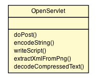

javax.servlet.GenericServlet
javax.servlet.http.HttpServlet
org.vorpal.blade.applications.console.mxgraph.OpenServlet
javax.servlet.GenericServlet
javax.servlet.http.HttpServlet
org.vorpal.blade.applications.console.mxgraph.OpenServlet
|
||||||||||
| PREV CLASS NEXT CLASS | FRAMES NO FRAMES | |||||||||
| SUMMARY: NESTED | FIELD | CONSTR | METHOD | DETAIL: FIELD | CONSTR | METHOD | |||||||||

java.lang.Object
public class OpenServlet
Servlet implementation class OpenServlet
| Field Summary | |
|---|---|
static boolean |
ENABLE_GLIFFY_SUPPORT
Global switch to enabled Gliffy support. |
static boolean |
ENABLE_GRAPHML_SUPPORT
Global switch to enabled GraphML support. |
protected static java.lang.String |
gliffyRegex
|
protected static java.lang.String |
graphMlRegex
|
static int |
PNG_CHUNK_IEND
|
static int |
PNG_CHUNK_ZTXT
|
| Constructor Summary | |
|---|---|
OpenServlet()
|
|
| Method Summary | |
|---|---|
static java.util.Map<java.lang.String,java.lang.String> |
decodeCompressedText(java.io.InputStream stream)
Decodes the zTXt chunk of the given PNG image stream. |
protected void |
doPost(javax.servlet.http.HttpServletRequest request,
javax.servlet.http.HttpServletResponse response)
|
protected java.lang.String |
encodeString(java.lang.String s)
URI encodes the given string for JavaScript. |
protected java.lang.String |
extractXmlFromPng(byte[] data)
|
protected void |
writeScript(java.io.PrintWriter writer,
java.lang.String js)
Writes the given string as a script in a HTML page to the given print writer. |
| Methods inherited from class javax.servlet.http.HttpServlet |
|---|
doDelete, doGet, doHead, doOptions, doPut, doTrace, getLastModified, service, service |
| Methods inherited from class javax.servlet.GenericServlet |
|---|
destroy, getInitParameter, getInitParameterNames, getServletConfig, getServletContext, getServletInfo, getServletName, init, init, log, log |
| Methods inherited from class java.lang.Object |
|---|
clone, equals, finalize, getClass, hashCode, notify, notifyAll, toString, wait, wait, wait |
| Field Detail |
|---|
public static boolean ENABLE_GLIFFY_SUPPORT
public static boolean ENABLE_GRAPHML_SUPPORT
public static final int PNG_CHUNK_ZTXT
public static final int PNG_CHUNK_IEND
protected static java.lang.String gliffyRegex
protected static java.lang.String graphMlRegex
| Constructor Detail |
|---|
public OpenServlet()
HttpServlet.HttpServlet()| Method Detail |
|---|
protected void doPost(javax.servlet.http.HttpServletRequest request,
javax.servlet.http.HttpServletResponse response)
throws javax.servlet.ServletException,
java.io.IOException
doPost in class javax.servlet.http.HttpServletjavax.servlet.ServletException
java.io.IOExceptionHttpServlet.doPost(HttpServletRequest request, HttpServletResponse
response)protected java.lang.String encodeString(java.lang.String s)
protected void writeScript(java.io.PrintWriter writer,
java.lang.String js)
protected java.lang.String extractXmlFromPng(byte[] data)
public static java.util.Map<java.lang.String,java.lang.String> decodeCompressedText(java.io.InputStream stream)
|
||||||||||
| PREV CLASS NEXT CLASS | FRAMES NO FRAMES | |||||||||
| SUMMARY: NESTED | FIELD | CONSTR | METHOD | DETAIL: FIELD | CONSTR | METHOD | |||||||||